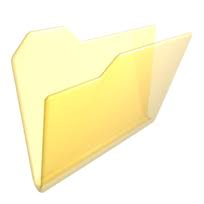

1. Introducción

La práctica de hoy va a estar relacionada con la creación de carpetas y la navegación con el explorador de archivos, tal y como hemos visto en la presentación. Enlazaremos tareas cotidianas en las que el explorador de archivos puede ayudar a desenvolvernos más eficientemente con el entorno.
2. Descargando imágenes
Veamos cómo utilizar el explorador para organizar, gestionar y buscar nuestros documentos.
- Abre un navegador y accede a http://www.google.es.
- Busca una imagen de "Les agulles de Santa Agueda" y descárgala al escritorio.
- Busca otra imagen del Castell de Penyiscola y descárgala al escritorio.
- Busca otra imagen del Castell de Morella y descárgala al escritorio.
- ¿En qué carpeta se han descargado las fotografías?
3. Utilizando el explorador de archivos
Abre el explorador de archivos y visualiza el contenido del escritorio.
- Identifica las 3 fotos que te has descargado.
- Haz doble click sobre alguna de ellas para abrirla.
3. Organizando en subcarpetas
Creemos ahora una carpeta en el escritorio llamada Ejercicio informática, donde moveremos todas las fotos que hemos descargado arrastrando y soltando.
- Si lo has conseguido, crea ahora 3 carpetas nuevas dentro de la carpeta Ejercicio informática: Benicàssim, Morella y Penyíscola.
- Mueve cada una de las imágenes a la carpeta que le corresponde.